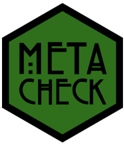

knitr::include_graphics("figures/metacheck.png")
An automated tool to improve scientific manuscripts
Cristian Mesquida
June 5, 2026
Applying quality management systems, such as ISO 9001
Workers are competent
These factors contribute to several recurring issues in scientific research, including:
They can be automatically detected
Automation
CRAN is checking
✗ drawImage: no visible global function definition for ‘Axis’
Replace it with axis()
metacheckAn R package containing modules to automate checks in manuscripts
Each module performs a certain task
Combines text search, code, and large language models to assess adherence to — or deviations from — scientific best practices
Can be applied to individual manuscripts or sets of manuscripts
metacheck:Quality Control: The knowledge, data, code, and software we create will be verified for accuracy using publicly available methods and measures, […].
AI Optional: The use of large language models will be restricted to classification, not evaluation of the quality of practice. The use of LLMs will always be opt-in and transparently declared. […].
metacheck modulesmarginal modulemarginal detects statements about marginally significant results
marginal module outputstat_effect_size modulestat_effect_size checks whether F-tests and t-tests have been reported with an effect size
stat_effect_size module output es test_text
1 <NA> t(19) = 1.1
2 Cohen's d = 1.7 t(19) = 7.7
3 Cohen's d = 0.3 t(19) = 1.3stat_p_exact modulestat_p_exact detects statements about imprecisely reported p-values
stat_p_exact module output# A tibble: 2 × 3
text section_type expanded
<chr> <chr> <chr>
1 p < .002 results To assess the foreground bias, we compared responses to…
2 p < .01 discussion We found that although backgrounds were categorized sig…# A tibble: 10 × 4
text paper_id section_type expanded
<chr> <chr> <chr> <chr>
1 p < .05 0956797614527830 results (Statistical significance was tested a…
2 p <.05 0956797614527830 results However, the T-participants did report…
3 p < .05 0956797614557697 results Crucially, we also found significant e…
4 p < .05 0956797614557697 results In addition, there was a significant i…
5 p > .29 0956797614557697 results No main effects or interactions with t…
6 p < .01 0956797614557697 results Congruence did not affect measures of …
7 p < .05 0956797614557697 results In a regression model including stimul…
8 p < .05 0956797614557697 results Specifically, we found a significant i…
9 p < .05 0956797614557697 figure Asterisks indicate a significant diffe…
10 p < .01 0956797614557697 figure Asterisks indicate a significant diffe…[1] "However, the T-participants did report thinking less about the best outcome for the group when completing the game (M = 2.75, SE = 0.34) than the T+ participants did (M = 4.00, SE = 0.41), β = -1.11 (SE = 0.50), p <.05."More than one module can be applied at once
“A power analysis indicated that a sample size of 60 participants was required to achieve 80% power”
Power analysis statements are often poorly reported
Lack of transparency hinders reproducibility and scrutiny
power modulepower detects power analysis statements and assesses their completeness
power uses an opt-in LLM to classify the information contained in the statement
Classified as unknown because there is no information about the type of power analysis reported
[1] "Participants. Twenty-nine healthy volunteers (15 men and 14 women) with a mean age of 21.7 years (range = 19-25 years) participated in Experiment 1. All participants were undergraduate or graduate students from the University of Tokyo and were recruited by the research assistant (Hiroki Tarumi). We determined the sample sizes on the basis of our preliminary experiment (for details, see Section S1 in the Supplemental Material available online). To do so, we conducted a power analysis for a repeated measures analysis of variance (ANOVA) using G*Power (Version 3.1; Faul et al., 2007), which determined that a sample of 29 participants would be needed to detect an effect size (ηp² ) of .42 with power of .95 and α of .05. Written informed consent was obtained from all volunteers in accordance with the latest version of the Declaration of Helsinki."{
"power_type": true,
"statistical_test": "paired t-test",
"sample_size": 20,
"alpha_level": 0.05,
"power": 0.8,
"effect_size": 0.4,
"effect_size_metric": "Cohen's d",
"software": "G*Power"
}
# A tibble: 1 × 9
text power_type statistical_test statistical_test_other sample_size
<chr> <chr> <chr> <chr> <dbl>
1 Participants. … apriori other repeated measures ANO… 29
# ℹ 4 more variables: alpha_level <dbl>, power <dbl>, effect_size <dbl>,
# effect_size_metric <chr>The power module assesses the completeness of power analysis statements
power module is a bit of a wizardpower can detect and classify several power analyses in a paragraph
Warning: Note (not fatal): 1 of 3 LLM extractions failed and was left blank; the other 2 succeeded and all checks continued.
Row 3: reason
HTTP 400 Bad Request.
ℹ Generated JSON does not match the expected schema. Please adjust your prompt.
See 'failed_generation' for more details. Error: jsonschema:
'/power_analyses/0/software' does not validate with
/properties/power_analyses/items/properties/software/type: expected string,
but got null
Provider says: Generated JSON does not match the expected schema. Please adjust your prompt. See 'failed_generation' for more details. Error: jsonschema: '/power_analyses/0/software' does not validate with /properties/power_analyses/items/properties/software/type: expected string, but got null# A tibble: 2 × 6
text power_type statistical_test sample_size alpha_level power
<chr> <chr> <chr> <dbl> <dbl> <dbl>
1 The sample size for… apriori other 24 0.002 0.8
2 The sample size for… apriori other 72 0.05 0.8metacheck as a shiny appmetacheck_app()
metacheck modulesValidation results of the marginal module
Cobb et al. (2024) found that out of 3,347 citations:
~81% were accurate
~9% failed to include important nuances of results
~10% completely mischaracterized original findings
miscitation moduleCreate a database of commonly miscited papers
Authors can log papers that are frequently miscited
miscitation detects citations included in the database and provides guidance on how it should be cited
Would scientists value receiving a metacheck report when sharing a preprint?
Would they consider it reliable?
metacheckAssess peer reactions to metacheck reports, with a focus on:
Trust in automated assessments
Perceived usefulness
Willingness to use or adopt metacheck
We are happy to work with you on using metacheck for metascience, or to create community-specific modules!
metacheck teammetacheck is partly financed by the Dutch Research Council (NWO) via the Thematic Digital Competence Centre Social Sciences & Humanities (TDCC-SSH) as part of the project Research Transparency Check (ICT.001.TDCC.018) under the grant https://doi.org/10.61686/ENWVD61320.
TU/e Center for Humans and Technology